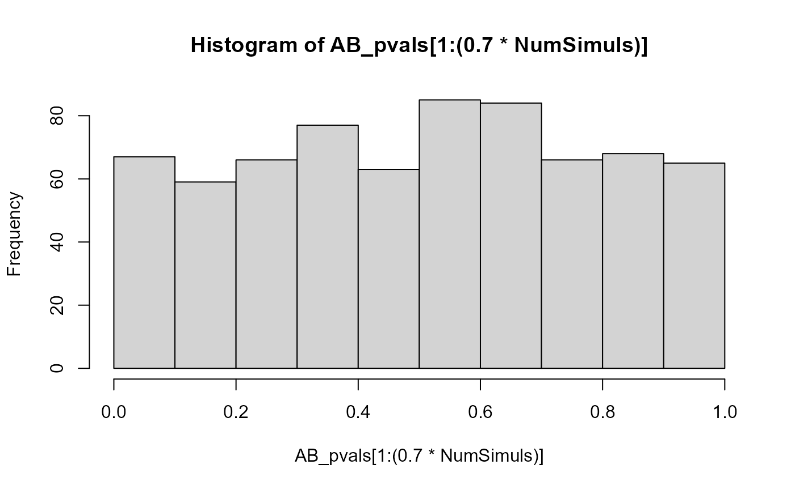
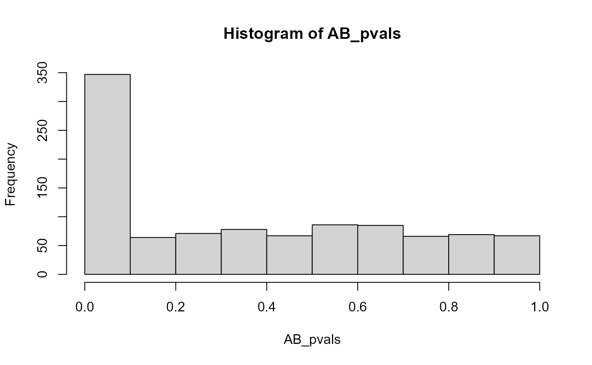
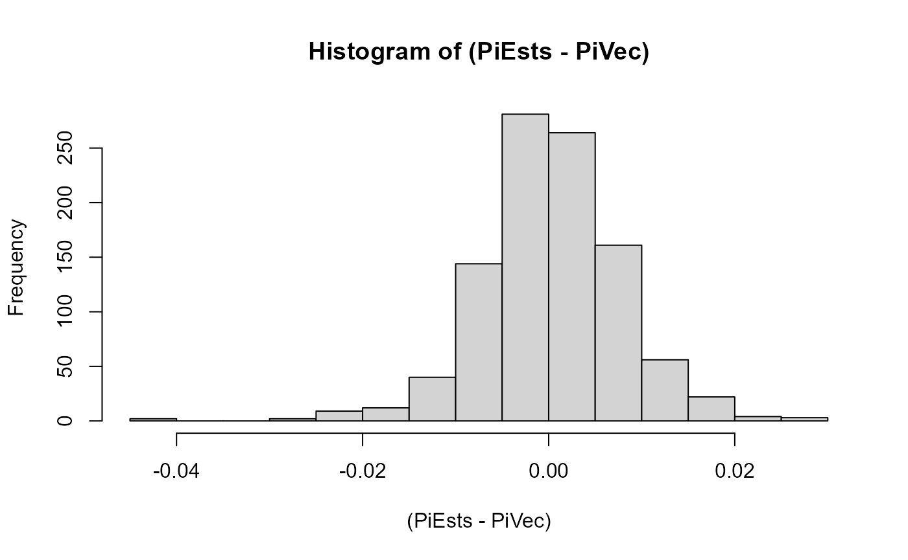
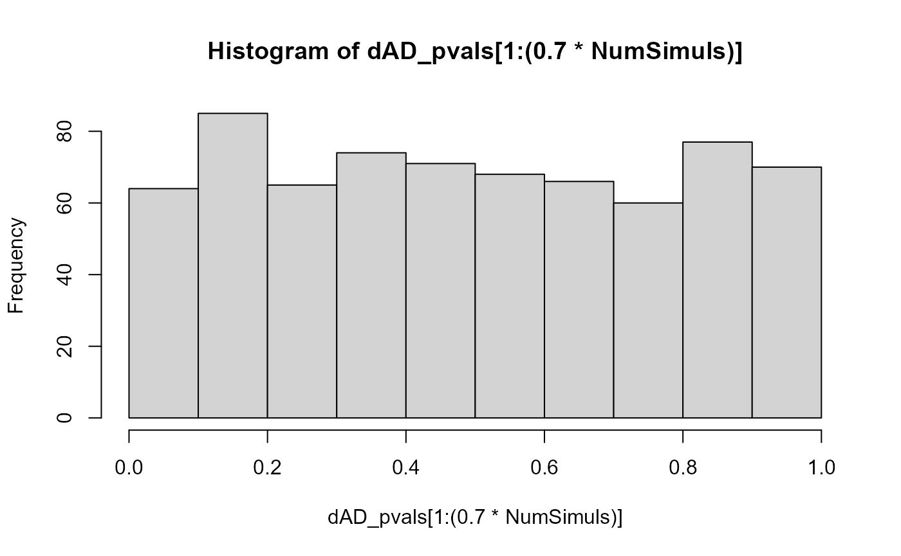
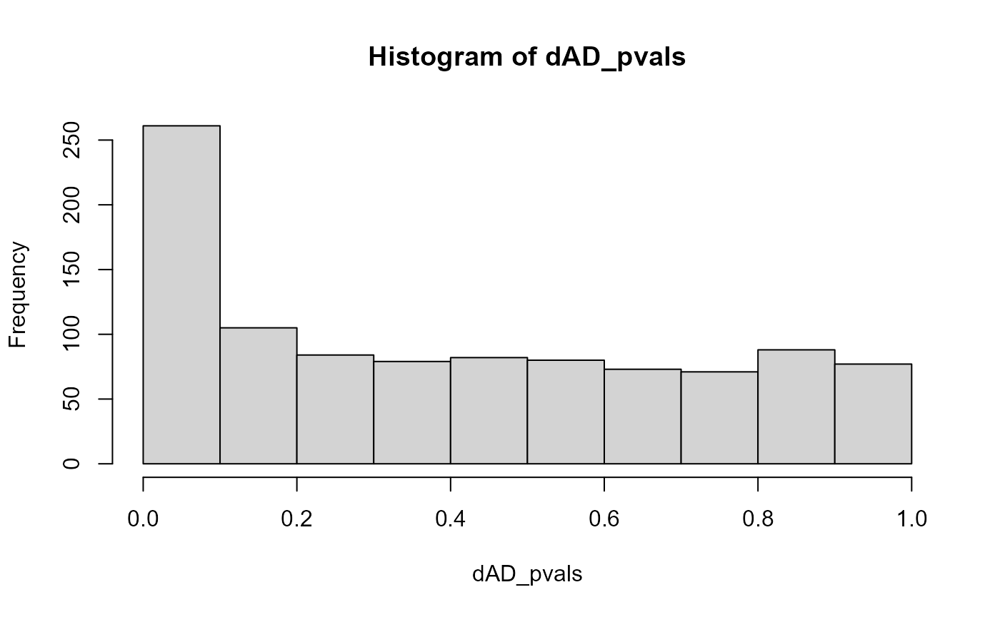
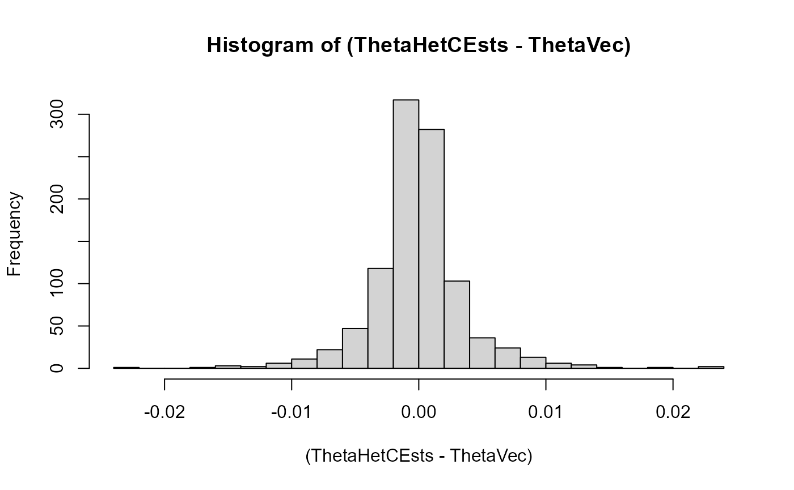
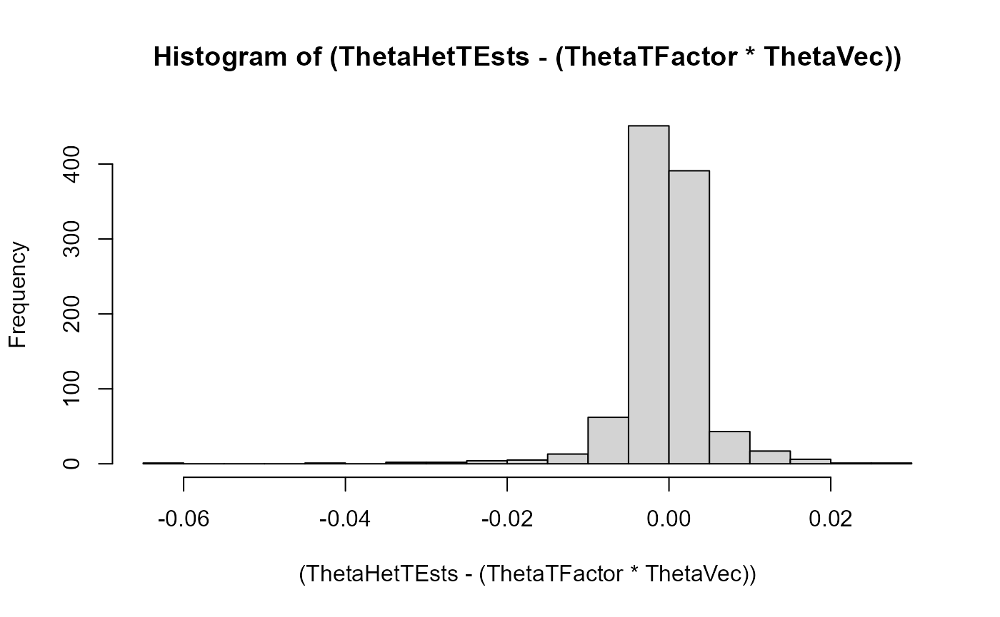

maelstRom_simulation_studies.RmdThis vignette simulates some data from three beta-binomial distributions, in line with the sort of data maelstRom aims to fit. So: allelic reads (reference- and variant) from a population of several homozygous reference samples, heterozygous samples, and homozygous variant samples. This is to validate that maelstRom’s Expectation-Maximization (EM) fitting procedure is able to accurately estimate the (heterozygous) distributional parameters that are of biological interest, and that its statistical tests perform as expected (so: uniform p-value distributions for data that was simulated in accordance to the null hypothesis, a peak around zero once non-null hypothesis generated data is added).
For in-depth explanations of the here discussed concepts and analysis, please refer to maelstRom’s other tutorial vignettes.
This first simulation study generates some data of a thousand (control) populations under HWE (inbreeding coeffiecent of zero) with 70% showing no allelic bias in heterozygotes, and 30% showing an allelic bias varying from 0.3 to 0.7 (fraction of reference allelic expression). Both the total number of individuals in the population and the total (reference + variant) count per sample are randomly generated as well. The parameter values used in this simulations study are within biologically realistic bounds, and the total number of samples and read counts (both around 100 or higher) are on the larger side so a to better reflect the asymptotic performance of the parameter estimation and tests.
NumSimuls <- 1000
NumC <- sample(100:200, NumSimuls, replace = TRUE)
PiVec <- c(rep(0.5, round(0.7*NumSimuls)), runif((NumSimuls-round(0.7*NumSimuls)), 0.3,0.7))
# Theta for heterozygotes between 10^-7 and 10^-1, the former being really low so almost like a regular binomial distribution,
# the latter being very large, especially for a population of "control" samples in which no clonal allele-specific abnormalities take place:
ThetaVec <- 10^(runif(NumSimuls, -7, -1))
# Theta values for homozygotes simulated over a somewhat narrower range, though this parameter isn't that impactful for these samples
# which will most often show entirely monoallelic expression anyway:
ThetaHomVec <- 10^(runif(NumSimuls, -4, -2))
# We let the reference allele fraction vary between 0.3 and 0.7 in this study,
# which ensures a reasonable amount of heterozygous data under HWE (inbreeding coefficient of zero):
HWEp <- runif(NumSimuls, 0.3, 0.7)
HWEq <- 1-HWEp
NHets <- 2*HWEp*HWEq
NHomVar <- (HWEq^2)
NHomRef <- 1 - NHets - NHomVar
AB_pvals <- c()
PiEsts <- c()
for(i in 1:NumSimuls){
# The total reference + variant allele counts is generated from a normal distribution with a mean of 100 (with a separate value per sample, per iteration):
NumReads <- round(rnorm(NumC[i], mean = 100, sd = 10))
# Generate the allele-specific count data; the homozygous pi-parameter, which is somewhat akin to a sequencing error rate,
# is set at a reasonable 0.003 here.
MyDF <- data.frame("sample" = 1:NumC[i], "ref_count" =
c(rBetaBinom(NumReads[1:round(NHets[i]*NumC[i])],pi = PiVec[i], theta = ThetaVec[i]),
rBetaBinom(NumReads[(round(NHets[i]*NumC[i])+1):(round(NHets[i]*NumC[i])+round(NHomRef[i]*NumC[i]))],pi = 1-0.003, theta = ThetaHomVec[i]),
rBetaBinom(NumReads[((round(NHets[i]*NumC[i])+round(NHomRef[i]*NumC[i]))+1):length(NumReads)],pi = 0.003, theta = ThetaHomVec[i]))
)
MyDF$var_count <- NumReads - MyDF$ref_count
# Fit the model:
maelstRomres <- maelstRom::EMfit_betabinom_robust(data_counts = MyDF,
SE = 0.003, inbr = 0)
# Save the p-values testing for deviation from perfectly balanced allele-specific expression,
# and the allelic bias estimates (heterozygous pi-parameters) themselves:
AB_pvals <- c(AB_pvals, maelstRomres$AB_p)
PiEsts <- c(PiEsts, maelstRomres$AB)
}The p-value distribution of those populations that were generated with perfectly balanced allelic expression is close enough to a uniform one:
hist(AB_pvals[1:(0.7*NumSimuls)])
Adding the populations in which the heterozygous samples were generated with skewed allelic expression leads to a peak of (statistically significant) results close to p-values of zero:
hist(AB_pvals)
Here we look at a histogram of the error on the heterozygous pi-value (allelic bias) estimation across populations. This is, expectedly, shaped like a normal distribution with mean zero:
hist((PiEsts-PiVec), breaks = 20)
This first simulation study generates, per iteration (1000 in total), two populations with identical distributional parameters (genotype fractions, pi- and theta-beta-binomial parameters), with the exception of the theta-parameter of heterozygotes. This is in order to test for a difference in this parameter (which would be differential allelic dispersion). Analogous to the previous simulation study, in 70% of the 1000 simulation iterations there’s actually no difference in these heterozygous theta parameters, while in the remaining 30% if differs by a factor ranging from 0.5 to 5 (uniform distribution; so, mostly a way higher theta in the second simulated population). There are some other differences between the two populations per iterations as well; one has a number of samples between 150 and 200, the other between 100 and 300. One has an average allelic count per sample of 142, the with the other’s ranging from 100 to 284 (to simulate a potential differential total expression between the populations). The remaining simulation details are similar to those of Simulation Study 1.
NumSimuls <- 1000
PiVec <- runif(NumSimuls, 0.3,0.7)
ThetaHomVec <- 10^(runif(NumSimuls, -4, -2))
HWEp <- runif(NumSimuls, 0.3, 0.7)
HWEq <- 1-HWEp
NHets <- 2*HWEp*HWEq
NHomVar <- (HWEq^2)
NHomRef <- 1 - NHets - NHomVar
# The number of samples in both populations
NumC <- sample(150:200, NumSimuls, replace = TRUE)
NumT <- sample(100:300, NumSimuls, replace = TRUE)
# Theta in the one population ranges from 0.001 to 0.05, here;
# with the difference factor in the other population being simulated between 0.5 and 5,
# this range is high enough so such a factor can make a difference (values too close to zero barely impact the beta-binomial anymore even if multiplied by 5),
# while not being too high so that multiplication by 5 could cause a peak split of the heterozygous peaks here.
ThetaVec <- 10^(runif(NumSimuls, -3, log10(0.05)))
ThetaTFactor <- c(rep(1, round(0.7*NumSimuls)), runif((NumSimuls-round(0.7*NumSimuls)), 0.5,5))
# To store dAD p-values and estimates of the heterozygous theta parameter in both populations per iteration:
dAD_pvals <- c()
ThetaHetCEsts <- c()
ThetaHetTEsts <- c()
for(i in 1:NumSimuls){
NumReads <- round(rnorm(NumC[i], mean = 142, sd = 10))
NumReadsT <- round(rnorm(NumT[i], mean = round((2^runif(1, -0.5, 1))*140), sd = 10))
MyDF_C <-data.frame("sample" = 1:NumC[i], "ref_count" =
c(
rBetaBinom(NumReads[1:round(NHets[i]*NumC[i])],pi = PiVec[i], theta = ThetaVec[i]),
rBetaBinom(NumReads[(round(NHets[i]*NumC[i])+1):(round(NHets[i]*NumC[i])+round(NHomRef[i]*NumC[i]))],pi = 1-0.003, theta = ThetaHomVec[i]),
rBetaBinom(NumReads[((round(NHets[i]*NumC[i])+round(NHomRef[i]*NumC[i]))+1):length(NumReads)],pi = 0.003, theta = ThetaHomVec[i])
))
MyDF_T <-data.frame("sample" = (1+NumC[i]):(NumC[i]+NumT[i]), "ref_count" =
c(
rBetaBinom(NumReadsT[1:round(NHets[i]*NumT[i])],pi = PiVec[i], theta = ThetaTFactor[i]*ThetaVec[i]),
rBetaBinom(NumReadsT[(round(NHets[i]*NumT[i])+1):(round(NHets[i]*NumT[i])+round(NHomRef[i]*NumT[i]))],pi = 1-0.003, theta = ThetaHomVec[i]),
rBetaBinom(NumReadsT[((round(NHets[i]*NumT[i])+round(NHomRef[i]*NumT[i]))+1):length(NumReadsT)],pi = 0.003, theta = ThetaHomVec[i])
))
MyDF_C$var_count <- NumReads - MyDF_C$ref_count
MyDF_T$var_count <- NumReadsT - MyDF_T$ref_count
MyDF_C$Gene <-"test"
MyDF_T$Gene <-"test"
MyDF_C <- list(MyDF_C)
MyDF_T <- list(MyDF_T)
names(MyDF_C) <- names(MyDF_T) <- "test"
datas <- list(
(MyDF_C),
(MyDF_T)
)
maelstRomres <- maelstRom::dAD_analysis(datas, SE = 0.003, inbr = 0)
dAD_pvals <- c(dAD_pvals, maelstRomres[[1]]$dAD_pval)
ThetaHetCEsts <- c(ThetaHetCEsts, maelstRomres[[1]]$ThetaHetC)
ThetaHetTEsts <- c(ThetaHetTEsts, maelstRomres[[1]]$ThetaHetT)
}The p-value distribution of those populations that were generated with no difference in heterozygous theta parameters is close enough to a uniform one:
hist(dAD_pvals[1:(0.7*NumSimuls)])
Adding the populations in which there was a simulated difference leads to a peak of (statistically significant) results close to p-values of zero:
hist(dAD_pvals)
Here we look at histograms of the error on the heterozygous theta-value estimation across the two populations in every iteration (plotted seperately for both). These are, expectedly, shaped like normal distributions with mean zero:
hist((ThetaHetCEsts-ThetaVec), breaks = 20)
hist((ThetaHetTEsts-(ThetaTFactor*ThetaVec)), breaks = 20)
sessionInfo()
#> R version 4.3.3 (2024-02-29 ucrt)
#> Platform: x86_64-w64-mingw32/x64 (64-bit)
#> Running under: Windows 10 x64 (build 19045)
#>
#> Matrix products: default
#>
#>
#> locale:
#> [1] LC_COLLATE=Dutch_Belgium.utf8
#> [2] LC_CTYPE=Dutch_Belgium.utf8
#> [3] LC_MONETARY=Dutch_Belgium.utf8
#> [4] LC_NUMERIC=C
#> [5] LC_TIME=Dutch_Belgium.utf8
#>
#> time zone: Europe/Brussels
#> tzcode source: internal
#>
#> attached base packages:
#> [1] stats
#> [2] graphics
#> [3] grDevices
#> [4] utils
#> [5] datasets
#> [6] methods
#> [7] base
#>
#> other attached packages:
#> [1] maelstRom_1.1.11
#>
#> loaded via a namespace (and not attached):
#> [1] gmp_0.7-5
#> [2] sass_0.4.10
#> [3] generics_0.1.4
#> [4] gtools_3.9.5
#> [5] lattice_0.22-5
#> [6] stringi_1.8.3
#> [7] digest_0.6.35
#> [8] magrittr_2.0.3
#> [9] rgl_1.3.1
#> [10] evaluate_1.0.4
#> [11] grid_4.3.3
#> [12] RColorBrewer_1.1-3
#> [13] fastmap_1.2.0
#> [14] jsonlite_1.8.8
#> [15] ggnewscale_0.5.2
#> [16] Formula_1.2-5
#> [17] purrr_1.0.2
#> [18] scales_1.4.0
#> [19] numDeriv_2016.8-1.1
#> [20] textshaping_1.0.1
#> [21] jquerylib_0.1.4
#> [22] Rdpack_2.6.4
#> [23] abind_1.4-8
#> [24] cli_3.6.2
#> [25] rlang_1.1.3
#> [26] rbibutils_2.2.16
#> [27] base64enc_0.1-3
#> [28] matlib_1.0.0
#> [29] cachem_1.1.0
#> [30] yaml_2.3.10
#> [31] tools_4.3.3
#> [32] parallel_4.3.3
#> [33] memoise_2.0.1
#> [34] dplyr_1.1.4
#> [35] ggplot2_3.5.2
#> [36] hash_2.2.6.3
#> [37] vctrs_0.6.5
#> [38] R6_2.6.1
#> [39] zoo_1.8-12
#> [40] lifecycle_1.0.4
#> [41] stringr_1.5.1
#> [42] fs_1.6.6
#> [43] car_3.1-3
#> [44] htmlwidgets_1.6.4
#> [45] MASS_7.3-60.0.1
#> [46] ragg_1.4.0
#> [47] pkgconfig_2.0.3
#> [48] desc_1.4.3
#> [49] pkgdown_2.0.9
#> [50] pillar_1.10.2
#> [51] bslib_0.9.0
#> [52] gtable_0.3.6
#> [53] Rcpp_1.0.12
#> [54] data.table_1.16.0
#> [55] glue_1.7.0
#> [56] systemfonts_1.2.3
#> [57] xfun_0.52
#> [58] tibble_3.2.1
#> [59] tidyselect_1.2.1
#> [60] rstudioapi_0.17.1
#> [61] knitr_1.50
#> [62] farver_2.1.2
#> [63] xtable_1.8-4
#> [64] htmltools_0.5.8
#> [65] patchwork_1.3.1
#> [66] rmarkdown_2.29
#> [67] carData_3.0-5
#> [68] compiler_4.3.3
#> [69] alabama_2023.1.0